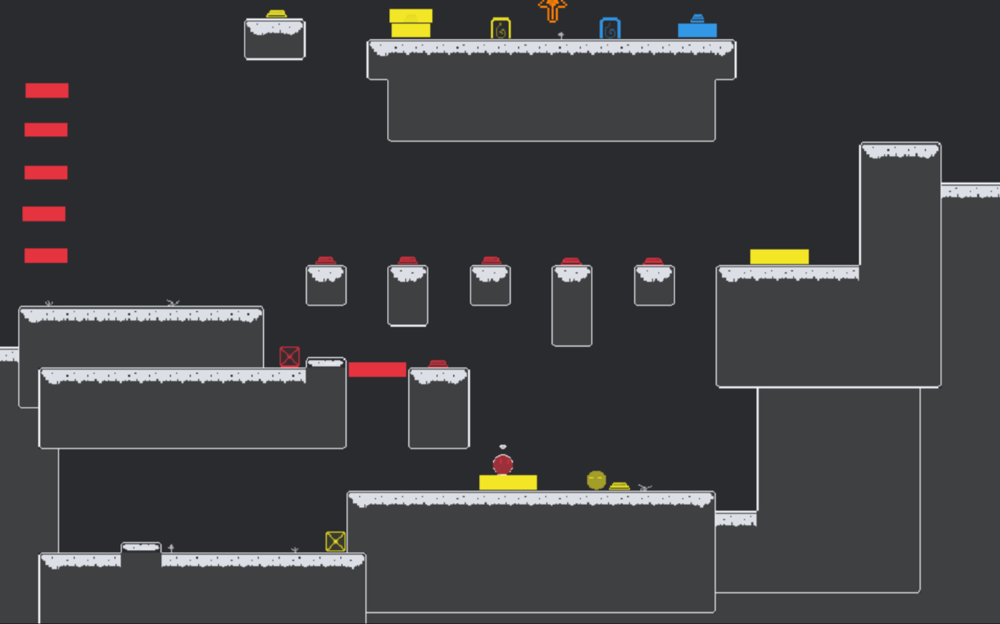
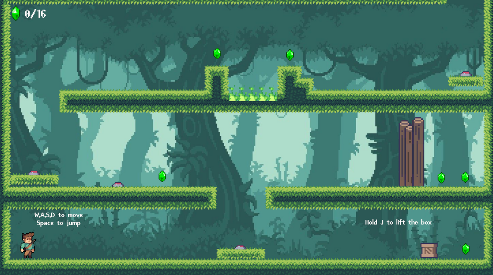

Game Designer
A passionate and aspiring game designer currently honing my skills at British University Vietnam in Computer Game Design and Programing major. I'm new to this field, but I have a strong passion for creating fun and exciting games. In my studies, I've learned a lot about how games are made, from coming up with ideas to actually building them. I'm excited to start working on real projects and keep learning and improving. Check out my and portfolio to see the projects I've been working on and follow my journey as I grow as a game designer.
14 July - 16 July 2023
Colorfull is a 2D puzzle platformer game. It was published on itch.io during the BUV Game Jam 2023 event, which featured the theme "Stronger Together". The game is similar to “Fireboy & Watergirl” but only need one player, the player has to switch between two characters. I was responsible for helping come up with ideas with the leader, and my main part was design, making the UI/UX and the last cutscene, which enhance enjoyable for the player. This project helped me learn how to teamwork and communicate with team members, which enhanced my experience for my future career.

8 Apr - 28 Jun 2024
This is my short 2D puzzle platformer. The player tries to collect all the gemstones and leave the jungle, be careful there are many traps that can prevent you from escaping the forest. Try it now on itch.io. I made this project to increase my ability in Game Design and Level Design.

If you'd like to get in touch, you can email me, call me, or message me on Facebook: